잘 시키고 · 잘 확인하고
내 일에 맞추는 이야기
S/W개발팀 S/W 혁신 P/J
SE 김학민 · 2026. 7
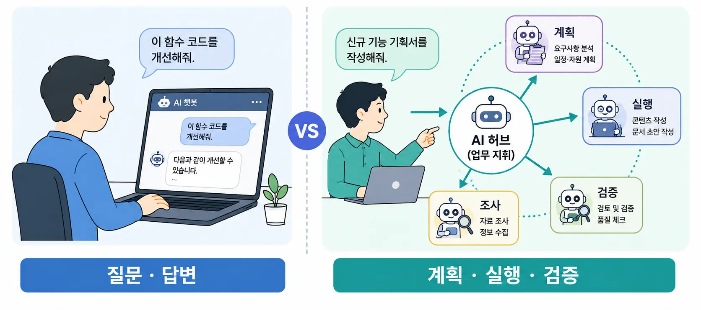
한쪽은 답을 받고 — 한쪽은 계획 · 실행 · 검증을 맡긴다
좋은 도구는 시작 — 편하게 잘 일하려면 사용 방식과 연결 설계가 필요
모델은 빠르게 좋아져도 — 실제 일은 연결 · 학습 · 검증 설계가 바꾼다
출처: METR Time Horizon (2025) · MIT NANDA GenAI Divide v0.1 (2025, pp. 3·8)
프론트엔드 개편 작업 — 수치보다 작업 방식의 변화에 주목
내부 프로젝트 사례 · 범위 · 조직 · 품질 기준에 따라 결과는 달라질 수 있음
더 좋은 모델과 도구로
할 수 있는 일을 넓힌다
상태 · 가설 · 제약으로
요청의 품질을 높인다
컨텍스트 · 도구 · 검증을
업무 흐름에 연결한다
셋 모두 중요 — 업무 흐름에 연결할 때 비로소 내 일이 편해진다
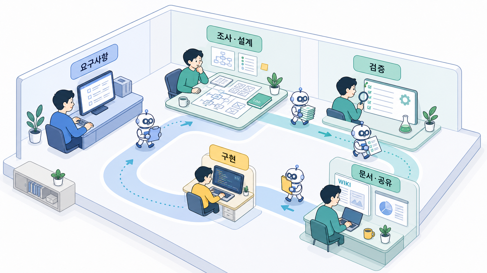
코드는 한 구간 — 많은 시간은 읽고 · 판단하고 · 설명하는 일
문서도
코드로 다룬다
LLM은 텍스트를 읽고 · 구조화하고 · 다른 문법으로 변환하는 데 강하다
슬라이드를 직접 그리는 게 아니라 — 만드는 도구를 코드로 지어서 실행
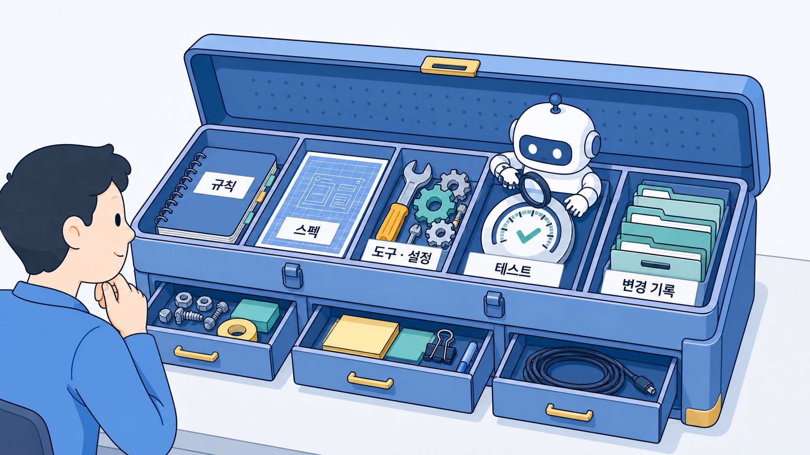
에이전트가 도구를 만들고 설정하기 때문에 — SW 엔지니어링을 조금 알수록 다루기 쉬워진다
도구는 달라도 — 부리는 원리는 동일
Claude Code (AWS Bedrock) · CCN (Claude Code w/ Narrans) · CodeMate
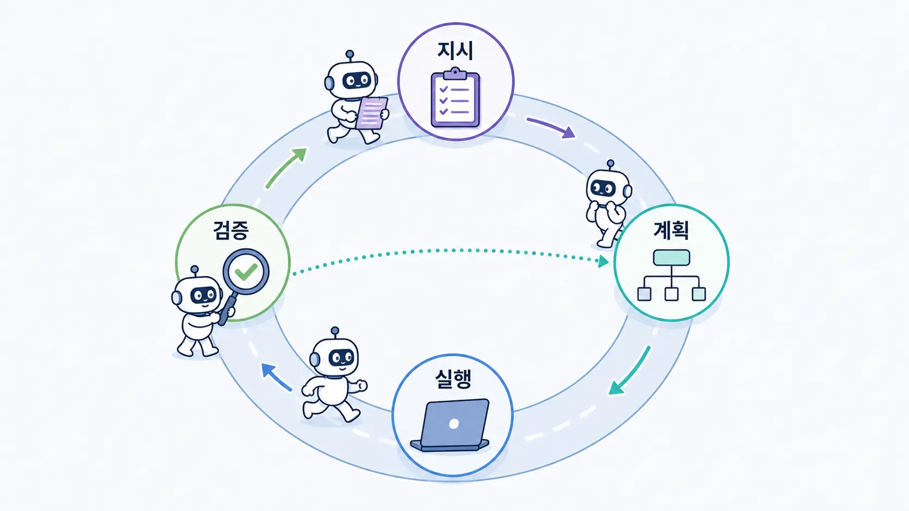
사람이 매 단계 붙지 않아도 — 검증 루프가 일을 끌고 감
루프에 채워 넣는 재료가
결과를 가른다
반복 방식 · 안전장치 · 작업 기준 — 지금부터 하나씩
같은 규칙
같은 순서
같은 검증
규칙 파일
skill · command
workflow
한 번 고친 방식이 — 이후 실행부터 계속 반영된다
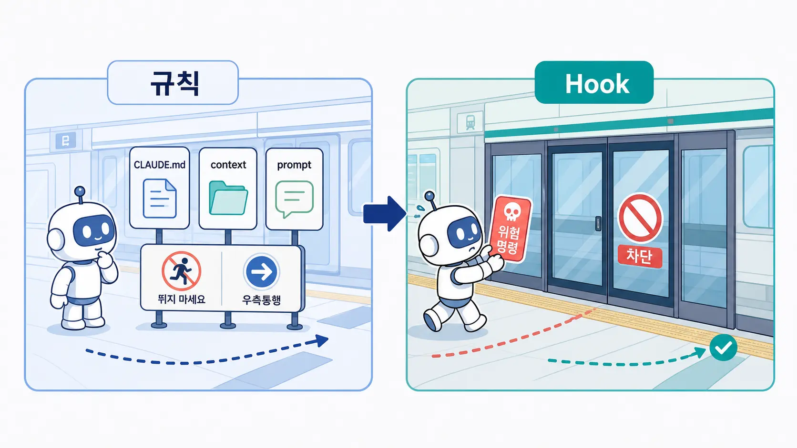
CLAUDE.md · context · prompt는 안내 — Hook은 위반을 실행 전에 차단
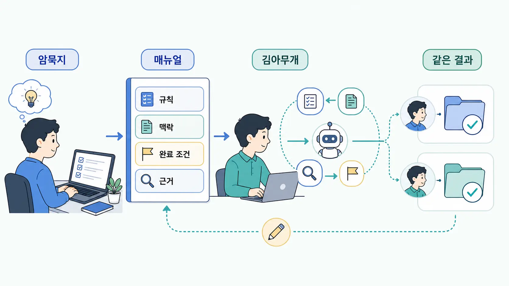
김아무개가 와도 같은 결과가 나오게 — 암묵지를 매뉴얼로 바꾼다
Jira · Confluence · SWDP · Prometheus · Splunk · Knox
목표 + 경계 + 근거
목표
바꿀 대상
완료 기준
경계
다룰 범위
금지할 것
근거
변경 내용
테스트 · 로그
사람은 방향과 금지선을 정하고 — 중간 작업은 에이전트에 맡긴다
MCP = 모델이 외부 도구와 데이터에 접근하는 표준 연결 방식 · 인증 · 권한 · 감사 로그는 별도 설계
복붙으로 나르던 맥락 — 에이전트가 직접 가지러 감
하나의 인터페이스로 — 맥락부터 검증까지
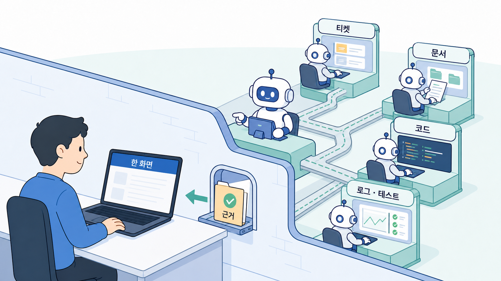
에이전트가 읽고 · 실행하고 · 근거를 돌려준다
사용자 불편 발견 · 개선 판단 · Jira · 패치 · 문서
에이전트 팀은 후보를 넓게 찾고 — 판단할 근거를 압축한다
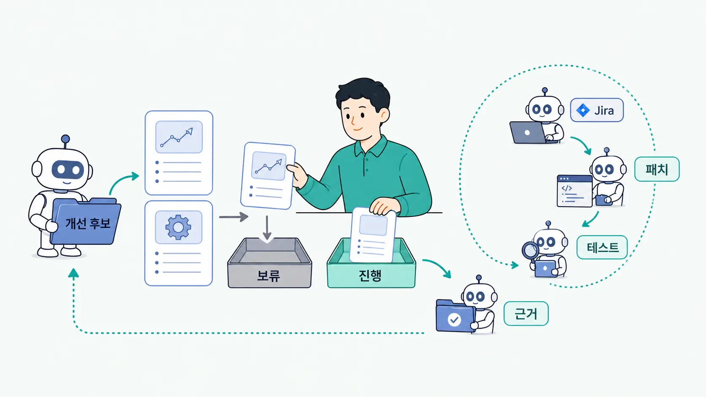
에이전트 조직은 계속 분석 — 사람은 평가하고 다음 방향을 정한다
문의가 들어온 뒤
화면 · 로그를 직접 확인
메트릭 · 질의 · 코드를 정리
개선 후보 리포트로 시작
서비스 운영 기술이 아니라 — 사용자가 막히는 지점을 찾는 일
에이전트는 근거를 넓게 모으고 — 사람은 고칠 가치와 우선순위를 판단
초안과 다이어그램은 에이전트 — 공개 전 검토는 사람
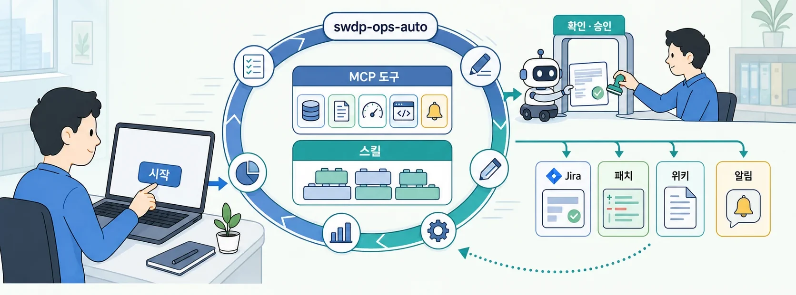
사람이 하는 일은 둘 — 시작하기 · 확인하고 승인하기
전부 내 업무의 모양대로 — 받는 것과 만드는 것이 분명한 실행 단위
분석 · 문서 · 테스트는 자율화
정책 · 우선순위 · 예외는 사람
반복 작업은 맡겨도 — 사용자 영향과 배포 판단은 아직 사람이 유지
대부분 잘해도 — 드문 한 번의 예외가
큰 문제로 이어질 수 있다
책임자가 맥락을 놓치면 — 예외가 생겼을 때 판단과 복구가 어려워진다
지금의 결론 · 실행은 맡기되, 책임자는 맥락과 판단력을 유지한다
이해할수록 — 좋은 잔소리가 많아진다
원인을 미리 단정하지 않고 — 우선 볼 범위와 확인 수단을 준다
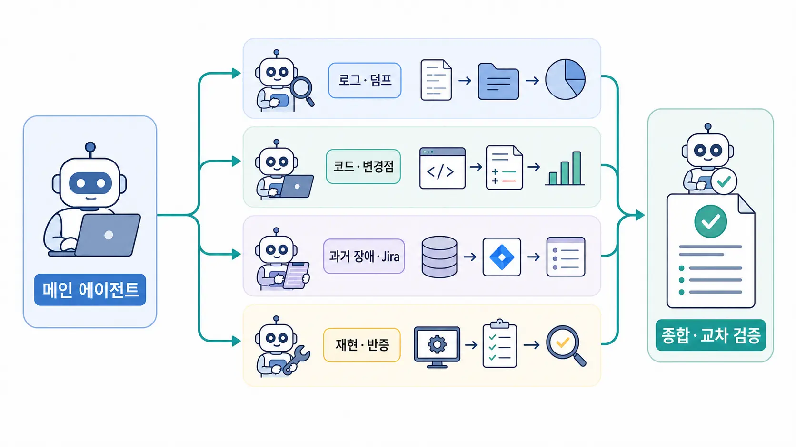
독립 가능한 조사는 fan-out — 근거 비교와 최종 판단은 다시 한곳에서
"수정 완료했습니다"
"통과할 것입니다"
설명은 증거가 아님
실행한 명령
PASS 결과
로그 · artifact
직접 실행해서 PASS가 확인되었을 때만 — 완료
브라우저에서 탐색
시각화 · 링크
공유하고 보관
고정된 보고서
바로 다음 업무로
이슈 · 패치 흐름
좋다는 방식을 하나씩 써 보고 — 내가 편한 채널을 남긴다
마음에 들면 rule · skill의 기본값으로 · 안 맞으면 빼거나 고친다
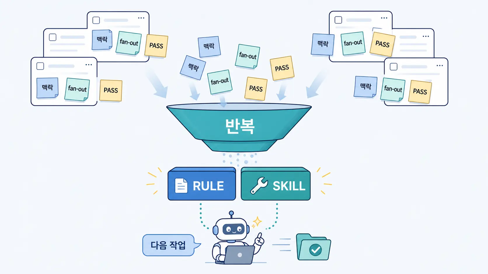
반복되는 잔소리를 발견하면 — 다음 작업의 기본 동작으로 고정한다
Rule = 항상 지킬 원칙과 경계 · Skill = 다시 실행할 다단계 절차
완벽한 세팅을 찾지 말고 — 순정으로 시작
도메인 지식 × AI Agent 활용 능력
= 더 큰 시너지
내가 오래 만진 영역일수록 — 가설 · 검증 · 판단이 더 빨라진다
좋은 BP · 도구 · 스킬
계속 바뀌고 · 선택지는 충분
내 성향과 업무에 맞는 조합
붙이고 · 빼고 · 고치며 만든다
한 번에 완벽히 세팅하려는 욕심을 버리고 — 워크플로를 계속 수정한다
MBTI를 해보듯 — 나의 AI 협업 성향과 일하는 방식을 본다
필요한 BP와 도구는 그때 붙이고 — 안 맞으면 빼거나 고친다
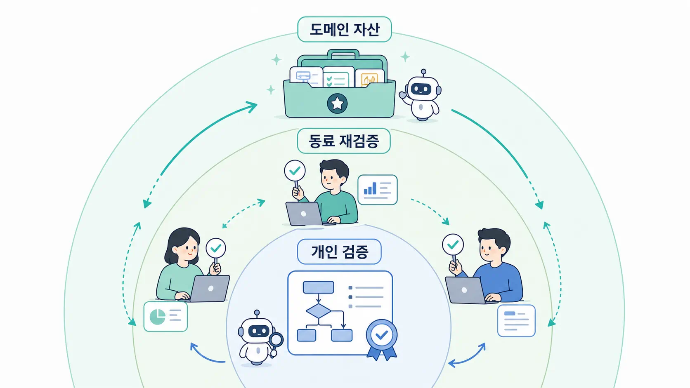
개인의 검증된 방식 × 동료의 재검증 — 함께 개선하는 도메인 자산
적용 범위와 검증 근거가 있는 것만 · 공동의 실행 단위로 공유한다
어떤 입력과 경계였나
무엇으로 검증했나
재현 가능한 workflow
어디서 깨졌나
언제 쓰면 안 되나
복구 방법 · 다음 안전장치
성공 사례는 출발점을 주고 — 실패 경험은 적용 경계를 알려준다
공유 문서 = 환경 · 버전 + 사용법 + 검증 근거 + 적용 금지 + 복구 절차
AI Agent 세미나 · 김학민 · 2026. 7